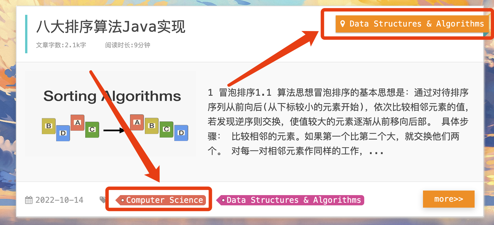
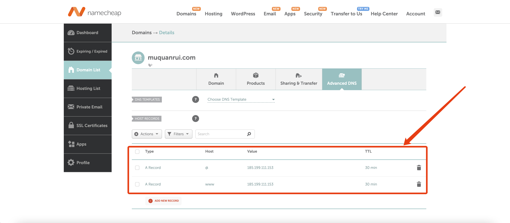
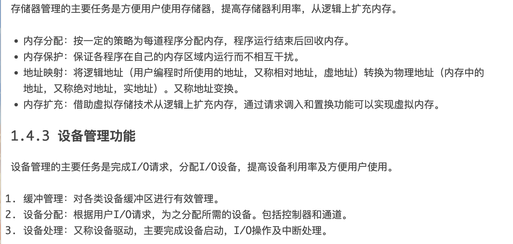
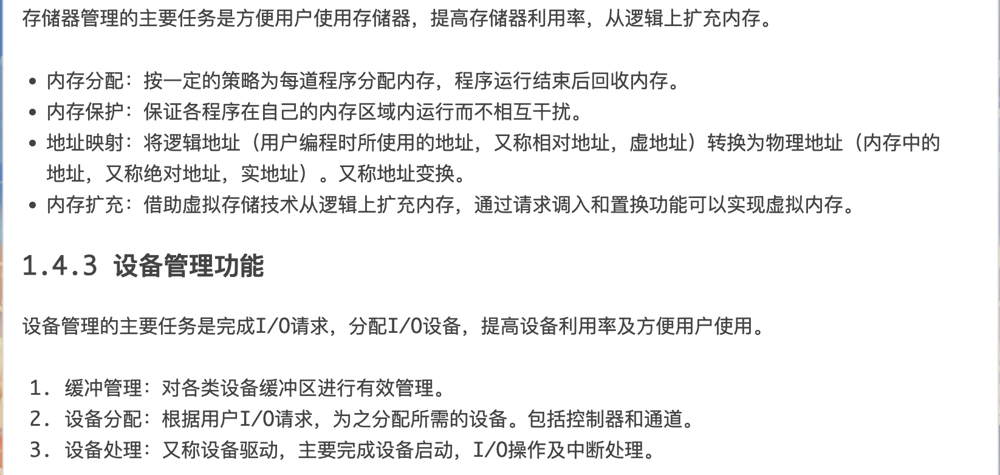
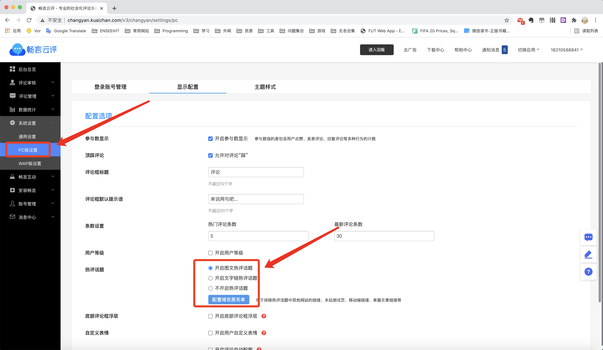
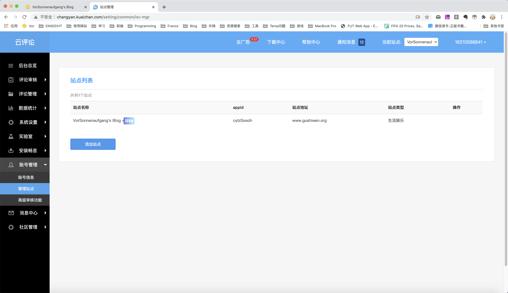
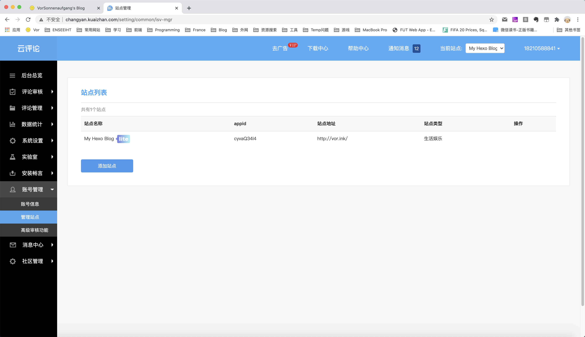
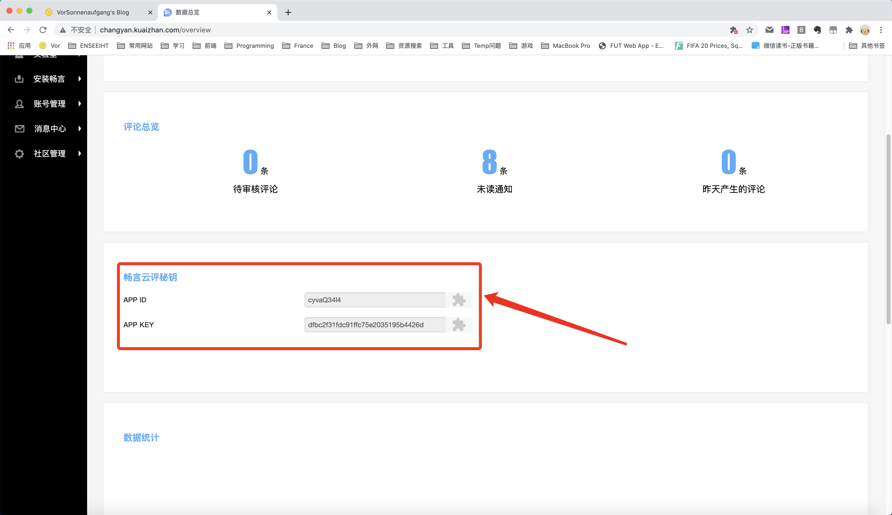

2023.2.20 修改h1样式
themes/miho/source/css/_extend.styl，让h1居中显示。
$base-style
h1
font-size: 2rem
text-align: center2023.1.7 解决带空格的标签和分类超链接跳转错误问题
之前对博客的分类进行重造之后，有了很多带空格的分类名和标签名。
但是点击之后跳转错误：
Cannot GET /categories/DataStructures&Algorithms/很明显这个超链接地址不对，而实际上该分类的链接地址是：

解决办法：修改文章中所有关于目录分类和标签的跳转链接，将空格替换为正确的分隔符-。
Hexo/themes/miho/layout/_partial/post/title.ejs
Hexo/themes/miho/layout/_partial/article.ejs
<a href="<%= config.root %>categories/<%= category.name.replace(/\s+/g, '') %>/"><%- category.name %></a>修改为：
<a href="<%= config.root %>categories/<%= category.name.replace('&', '').replace(/\s+/g, '-') %>/"><%- category.name %></a>Hexo/themes/miho/layout/_partial/post/tag.ejs
<a href="<%= config.root %>tags/<%= tag.name.replace(/\s+/g, '') %>/" class="color<%= tag.name.length % 5 + 1 %>"><%- tag.name %></a>修改为：
<a href="<%= config.root %>tags/<%= tag.name.replace('&', '').replace(/\s+/g, '-') %>/" class="color<%= tag.name.length % 5 + 1 %>"><%- tag.name %></a>2022.12.31 修改GitHub用户名后的配置变动
Hexo/_config.yml
deploy:
type: git
repository: git@github.com:muquanrui/muquanrui.github.io.git
branch: masterHexo/themes/miho/layout/_partial/header.ejs
<a href="https://github.com/muquanrui" class="github-corner" aria-label="View source on Github"><svg width="80" height="80" viewBox="0 0 250 250" style="fill:#FFA500; color:#fff; position: absolute; top: 0; border: 0; left: 0; transform: scale(-1, 1);" aria-hidden="true"><path d="M0,0 L115,115 L130,115 L142,142 L250,250 L250,0 Z"></path><path d="M128.3,109.0 C113.8,99.7 119.0,89.6 119.0,89.6 C122.0,82.7 120.5,78.6 120.5,78.6 C119.2,72.0 123.4,76.3 123.4,76.3 C127.3,80.9 125.5,87.3 125.5,87.3 C122.9,97.6 130.6,101.9 134.4,103.2" fill="currentColor" style="transform-origin: 130px 106px;" class="octo-arm"></path><path d="M115.0,115.0 C114.9,115.1 118.7,116.5 119.8,115.4 L133.7,101.6 C136.9,99.2 139.9,98.4 142.2,98.6 C133.8,88.0 127.5,74.4 143.8,58.0 C148.5,53.4 154.0,51.2 159.7,51.0 C160.3,49.4 163.2,43.6 171.4,40.1 C171.4,40.1 176.1,42.5 178.8,56.2 C183.1,58.6 187.2,61.8 190.9,65.4 C194.5,69.0 197.7,73.2 200.1,77.6 C213.8,80.2 216.3,84.9 216.3,84.9 C212.7,93.1 206.9,96.0 205.4,96.6 C205.1,102.4 203.0,107.8 198.3,112.5 C181.9,128.9 168.3,122.5 157.7,114.1 C157.9,116.9 156.7,120.9 152.7,124.9 L141.0,136.5 C139.8,137.7 141.6,141.9 141.8,141.8 Z" fill="currentColor" class="octo-body"></path></svg></a><style>.github-corner:hover .octo-arm{animation:octocat-wave 560ms ease-in-out}@keyframes octocat-wave{0%,100%{transform:rotate(0)}20%,60%{transform:rotate(-25deg)}40%,80%{transform:rotate(10deg)}}@media (max-width:500px){.github-corner:hover .octo-arm{animation:none}.github-corner .octo-arm{animation:octocat-wave 560ms ease-in-out}}</style>Hexo/themes/miho/_config.yml
url: //github.com/muquanrui
# 删除以下
# copyright:
# title: CSDN
# url: //blog.csdn.net/vorsonnenaufgang
# target: true2022.12.31 更改博客绑定域名和相关信息
在namecheap购买了新的域名muquanrui.com，于是将GitHub Pages的地址定向到新的域名。

同时将博客的VorSonnenaufgang元素修改为Quanrui。
Hexo/_config.yml
title: Quanrui's Blog # 站点标题
author: MU Quanrui # 作者
url: http://muquanrui.com/Users/muquanrui/Documents/Hexo/themes/miho/_config.yml
keywords: Quanrui's Blog
header_title: Quanrui's Blog2022.12.25 修改图片样式
Typora中进行图片缩放后的样式会将markdown插入的图片语法变为HTML语法：
<img src="images/image-20221217222654284.png" alt="image-20221217222654284" style="zoom:33%;" />因为博客主体样式只有对标准markdown语法渲染后的.article-entry p img有样式设定，导致显示时图片会超出正文内容边界。
themes/miho/source/css/_partial/article.styl
复制体添加同样的样式给.article-entry img：
img
max-width: 100%
height: auto
display: block
margin: auto
box-shadow: 0 0 30px #ccc
-moz-box-shadow: 0 0 30px #ccc
-webkit-box-shadow: 0 0 30px #ccc2022.4.28 修改加粗字体的颜色
由修改Typora的主题萌生出来的念头，因为粗体只有bold显得并不是strong，属于白费了这个基础样式，于是把粗体在bold的基础上再加上颜色，使其更为醒目。
themes/miho/source/css/_partial/article.styl
.article-entry
strong
color: #8A2BE2;2022.3.17 目录水平方向滚动槽
之前对目录做修改时只保留了垂直方向的滚动，忽略了单行标题过长超出显示范围的情况，因此加上水平方向的滚动槽。
themes/miho/source/css/_partial/article.styl
.post-toc
overflow-y: hidden
overflow-x: hidden
.post-toc:hover
overflow-y: auto;
overflow-x: auto;2022.2.21 解决背景和小姐姐不适配iPhone/iPad问题
小姐姐在11寸iPad横屏的情况下因为是视窗高度不满足设定条件消失了，其实这个高度是可以让她继续存在的，因此/Users/muquanrui/Documents/Hexo/themes/miho/source/js/main.js，调整判断条件。
showGirl: function () {
// 725：小姐姐显示的最小视窗高度
// 1180：小姐姐显示的最小视窗宽度
girl.css("display", (clientHeight >= 725 && curWidth >= 1180) ? "block" : "none");
},另外一个问题是背景图在iPhone或者iPad上不管是Safari还是其他浏览器，都没有像在PC或Mac端一样在视窗被固定，而是随着页面的滚动而滚动，这导致整个背景图不正确的被缩放，效果十分丑陋。
查询原因是background-attachment:fixed在iPhone/iPad被禁用，解决办法是直接取消在body上设置背景，使用一个单独的div作为背景图片。
/Users/muquanrui/Documents/Hexo/themes/miho/layout/layout.ejs，增加div。
<div id="background"></div><!--背景颜色/图片-->/Users/muquanrui/Documents/Hexo/themes/miho/source/css/style.styl，删除body的css中关于background属性的设置，并且增加background的css。
body
font-family: font-family
background-color: #181C3C
background-size: cover;
background-attachment: fixed
margin: 0px
font-size: font-size
-webkit-text-size-adjust: 100%
position: relative
#background
background: url(banner.jpg)
background-size: cover
background-repeat: no-repeat
background-position: center
position: fixed
height: 100vh
width: 100vw问题解决。要注意这里的height和width的设置，如果使用100%，在移动端的Safari缩放时会让背景也跟着缩放，使用100vh同样会带来问题，因为缩放时由于标签栏的消失，视窗高度依然会改变，背景下方会增加内容，出现闪现的效果，这个问题目前还没找到有效的解决办法，可以参考CSS3 100vh not constant in mobile browser，只能通过给body增加一个背景色让之前白色的闪现不那么突兀了。
2022.2.17 更新资源，样式和动态效果
新的背景图放置在/Users/muquanrui/Documents/Hexo/themes/miho/source/css/banner.jpg。

新的头像放置在/Users/muquanrui/Documents/Hexo/themes/miho/source/images/logo.png。
themes/miho/source/css/_variables.styl，更改一些全局常量。
- 主色和辅色。
main-color = #FF8C00
second-color = #FFA500- 更改字体集。
font-family = Monaco, "Helvetica Neue", Helvetica, Arial, "PingFang SC", "Hiragino Sans GB", "Microsoft YaHei", "WenQuanYi Micro Hei", sans-serif;- 增加variable，后续统一使用。
title-size = 26px
title-height = 1.5px/Users/muquanrui/Documents/Hexo/themes/miho/source/css/style.styl，修改页面背景图的样式为铺满屏幕，并且取消在视窗过小时重复背景，改为自动拉伸。
body
font-family: font-family
background: url(banner.jpg)
background-size: cover;
background-attachment: fixed
backgound-positon: 100% 100%
margin:0px
font-size: font-size
-webkit-text-size-adjust: 100%
position: relativethemes/miho/source/css/_extend.styl，修改标题字体大小。
$base-style
h1
font-size: 2rem
h2
font-size: 1.8rem
h3
font-size: 1.5rem
h4
font-size: 1.3rem
h5
font-size: 1rem
h6
font-size: 1remthemes/miho/layout/_partial/header.ejs，修改GitHub链接图标颜色。
style="fill:#FFA500;..."/Users/muquanrui/Documents/Hexo/themes/miho/source/css/_partial/post.styl，使用刚刚新设置的变量规范文章标题字体大小和行高。
.post-title
font-size: title-size
.post-title-bar
line-height: title-height接下来对目录做大修改。
/Users/muquanrui/Documents/Hexo/themes/miho/layout/_partial/post/toc.ejs，修改目录标题的名字。
<div class= "post-toc-name">Table of Contents</div>themes/miho/source/css/_partial/article.styl，修改目录样式。
- 修改目录的边框粗细、颜色、弧度，目录高度，注意高度要设置为
100vh - 2 * border-width，才能保证上下边框都显示，同样的，修改宽度，要多减去边框2 * border-width，才能保证和正文的间距为20px。
.post-toc-wrap
position: fixed
width: calc((100vw - 820px) / 2 - 26px)
height: calc(100vh - 6px)
background: rgba(255, 255, 255, 0.4);
box-shadow: 0 5px 10px rgba(0,0,0,0.2)
border: 3px solid second-color;
border-radius: 10px- 修改目录标题的大小，字体，背景透明度，边框阴影、颜色和弧度，内间距。
.post-toc-name
font-size: title-size
font-family: font-family
padding: 15px 10px
margin-bottom: 20px
background: rgba(255, 255, 255, 0.7)
box-shadow: 0 5px 10px rgba(255,127,80,0.8)
border-bottom: 5px solid second-color
border-radius: 10px- 修改目录内容的高度。
post-toc-wrap.height = 100vh - 2 * post-toc-wrap.boder-widthpost-toc-wrap.boder-width = 3pxpost-toc-name = 26pxpost-toc-name.padding-top/bottom = 15pxpost-toc-name.margin-bottom = 20pxpost-toc-name.border-bottom = 5px
因此充满post-toc-wrap下方100%高度时，post-toc.height = post-toc-wrap.height - post-toc-name - post-toc-name.padding-top - post-toc-name.padding-bottom - post-toc-name.margin-bottom - post-toc-name.border-bottom = 100vh - 6px - 26px - 30px - 20px - 5px = 100vh - 87px，因为目录内容和上方post-toc-name的间距为20px，如果要和下方也保持20px，目录内容的高度要再减去20px。
.post-toc
height: calc(100vh - 107px)- 取消目录内容的左边框，增加目录内容的缩进。
.post-toc-wrap > ol
margin-left: 10px- 相应的，修改目录内容的宽度为父容器
post-toc-wrap的宽度减去缩进的10px。
.post-toc
width: calc(100% - 10px)- 在鼠标出现在目录区域内时才显示目录的滚动条。
.post-toc
overflow-y: hidden
.post-toc:hover
overflow-y: auto;themes/miho/source/css/_partial/article.styl，修改标签云字体为刚刚设置的全局font-family。
.tag-cloud {
a{
font-family: font-family;
}
}/Users/muquanrui/Documents/Hexo/themes/miho/source/css/_partial/sidebar.styl ，调整侧边sidebar距离顶部的位置。
.sidebar
bottom: 320px/Users/muquanrui/Documents/Hexo/_config.yml ，调整看板娘小姐姐距离顶部的位置。
live2d:
vOffset: -30发现font-family更改后，因为中英文不一致的字体，所以有序列表ol的数字序号会没有缩进，很奇怪的现象。

但是在增加padding后，缩进就出现了。

.article-entry.padding即正文的padding是15px，因此要让列表再基于正文缩进一段距离，/Users/muquanrui/Documents/Hexo/themes/miho/source/css/_extend.styl ，设置列表的缩进为20px。
ul, ol, dl
margin: 0 20px
line-height: line-height然后更改代码高亮样式。
首先下载新的样式tranquil-heart，放在
/Users/muquanrui/Documents/Hexo/themes/miho/source/google-code-prettify/tranquil-heart.css。修改
/Users/muquanrui/Documents/Hexo/themes/miho/layout/_partial/head.ejs。
<!--加载prettify代码高亮样式-->
<link href="/google-code-prettify/tranquil-heart.css" type="text/css" rel="stylesheet" />- 对原生的样式不满意，因此手动修改
tranquil-heart.css，为行内代码和代码块分别设置高亮，修改后的样式文件可以参考修改代码高亮样式Tranquil Heart。
最后是/Users/muquanrui/Documents/Hexo/themes/miho/source/js/main.js ，一些动态效果的修改。
- 增加一些全局变量，比如可视区的高度、宽度，可滚动内容的元素总高度等。
headerHeight = d.getElementById("header").offsetHeight, // 获取header高度
clientHeight = d.documentElement.clientHeight, // 获取可视区的高度
curWidth = $(window).width(), //获取可视区的宽度
bodyHeight= d.body.scrollHeight, // 获取可滚动内容的元素总高度
articleHeight = d.getElementsByClassName("article-inner")[0].offsetHeight, // 获取article内容的高度
sidebar = $(".sidebar"), // 获取div sidebar
girl = $("#live2d-widget"); // 获取小姐姐- 设置目录在浏览器窗口宽度不足以在一行显示目录标题时隐藏。
showToc: function (scrollTop) {
// 1443：可显示目录的最小视窗宽度
// 30：header，footer和article的margin
if (curWidth >= 1443 && scrollTop >= headerHeight + 30 && scrollTop <= headerHeight + 30 + articleHeight - clientHeight) {
$(".post-toc-name").css("display","block");
toc.removeClass("post-toc-top");
toc.addClass("post-toc-not-top");
}
else{
$(".post-toc-name").css("display","none");
toc.removeClass("post-toc-not-top");
toc.addClass("post-toc-top");
}
},- 设置标签、分类等sidebar在窗口宽度、高度不同条件下显示与隐藏。
showSidebar: function () {
// 535：sidebar显示的最小视窗高度
// 1060：sidebar显示的最小视窗宽度
sidebar.css("display", (clientHeight >= 535 && curWidth >= 1060) ? "block" : "none");
},- 设置看板娘小姐姐在窗口宽度、高度的不同条件下显示与隐藏。
showGirl: function () {
// 730：小姐姐显示的最小视窗高度
// 1180：小姐姐显示的最小视窗宽度
girl.css("display", (clientHeight >= 730 && curWidth >= 1180) ? "block" : "none");
},- 封装上下滚动页面时要使用的方法。
showWithScroll: function () {
var scrollTop = d.documentElement.scrollTop || d.body.scrollTop;
Blog.showHeaderMenu(scrollTop);
Blog.showBackTop(scrollTop);
Blog.showToc(scrollTop);
},- 封装调整窗口大小时要使用的方法。
showWithResize: function () {
var scrollTop = d.documentElement.scrollTop || d.body.scrollTop;
Blog.showToc(scrollTop);
Blog.showSidebar();
Blog.showGirl();
},- 看板娘引入后，busuanzi不蒜子计数uv、pv的显示块很多时候莫名其妙被设置为
display:none，因此使用js在window加载完成后手动设置为inline。
showBusuanzi: function () {
$("#busuanzi_container_site_uv").css('display', "inline");
$("#busuanzi_container_site_pv").css('display', "inline");
$("#busuanzi_value_page_pv").css('display', "inline");
},- 设置document的
DOMContentLoaded事件监听器，在document加载完成时就调用方法判断是否显示目录、sidebar等元素。
// 获取document加载完成事件
d.addEventListener('DOMContentLoaded',function(){
Blog.showWithScroll();
Blog.showWithResize();
});- 设置window的
load事件监听器，在window加载完成后重新获取带滚动页面高度和正文高度，因为资源加载完成后会发生变化，然后再次判断是否显示目录、sidebar等元素。
// 获取window加载完成事件
w.addEventListener('load',function(){
bodyHeight = d.body.scrollHeight;
articleHeight = d.getElementsByClassName('article-inner')[0].offsetHeight;
girl = $("#live2d-widget");
Blog.showBusuanzi();
Blog.showWithScroll();
Blog.showWithResize();
});- 设置window的
resize事件监听器，在调整视窗大小时，重新获取浏览器窗口的高度，宽度，然后调用showWithResize()。
// 获取resize事件
w.addEventListener('resize', function() {
clientHeight = d.documentElement.clientHeight;
curWidth = $(window).width();
Blog.showWithResize();
});- 设置document的
scroll事件监听器，在滚动页面时，调用showWithScroll()。
// 获取滚动事件
d.addEventListener('scroll', function () {
Blog.showWithScroll();
}, false);2.19日完成。
2022.2.17 安装置顶文章插件
npm install hexo-generator-index --save修改根目录下 _config.yml，添加（如果已经存在index_generator设置项则不用更改）：
# hexo-generator-index
index_generator:
path: ''
per_page: 10
order_by: -date
pagination_dir: page在需要置顶的文章头部加上sticky，数字越大置顶会越靠前。
---
title: Blog更新记录
date: 2020-9-23 15:24:15
categories: Blog
author: VorSonnenaufgang
tags:
- Blog
cover_picture: cover.jpg
sticky: 1
---2021.4.13 畅言取消热评话题显示
打开文章页面，加载过慢，Network监测发现是畅言热评加载图片资源的锅，于是关掉。
2021.2.3 代码高亮
更改博客的代码高亮样式。

改为不开启。
2020.12.9 访客数和访问量显示
更改底部的访客数和访问量统计显示，中间加一个｜。
miho->layout->_partial->sites->visit.ejs
<% if (theme.access_counter.on) { %>
<p>
<span id="busuanzi_container_site_uv" style='display:none'>
<%- theme.access_counter.site_uv %><span id="busuanzi_value_site_uv"></span>
</span>
<span id="busuanzi_container_site_pv" style='display:none'>
<%- theme.access_counter.site_pv %><span id="busuanzi_value_site_pv"></span>
</span>
<div class="theme-info">
</p>
<% } %>
修改为：
<% if (theme.access_counter.on) { %>
<p>
<span id="busuanzi_container_site_uv" style='display:none'>
<%- theme.access_counter.site_uv %><span id="busuanzi_value_site_uv"></span>
</span>
|
<span id="busuanzi_container_site_pv" style='display:none'>
<%- theme.access_counter.site_pv %><span id="busuanzi_value_site_pv"></span>
</span>
<div class="theme-info">
</p>
<% } %>2020.11.25 畅言id
评论功能畅言云评的设置修改。
http://changyan.kuaizhan.com/setting/common/isv-mgr

站点地址错误，删除地址，重新添加。

并且获取畅言新推出的去广告的lite版。
复制新生成的appid和appkey进行替换。

miho->_config.yml
# 畅言，输入appid和appkey
changyan_appid: cytzSxwzh
changyan_appkey: 5280c2cb8d655a130b0308fcb528f675# 畅言，输入appid和appkey
changyan_appid: cyvaQ34l4
changyan_appkey: dfbc2f31fdc91ffc75e2035195b4426d2020.11.24 标题字体大小
miho->source->css->_extend.styl
之前修改过的正文内容标题字体大小补录。
$base-style
h1
font-size: 2.5rem
h2
font-size: 2.0rem
h3
font-size: 1.5rem
h4
font-size: 1.2rem
h5
font-size: 1rem
h6
font-size: 1rem2020.11.20 收款码
miho->source->images
刚更新支付宝和微信支付的收款二维码。
2020.9.24 目录动态显示
miho->source->js->main.js
增大目录侧边栏出现时距离顶部的距离：增大控制目录出现的scrollTop / clientHeight比值。
设置目录侧边栏在滑动到接近文章底部时隐藏：文章底部和页面底部的距离为确定值，增加控制条件网页正文高度document.body.scrollHeight和滑动高度scrollTop的差值大于特定值时才出现目录。
showToc: function (scrollTop) {
if (scrollTop / clientHeight >= 0.4 && $(window).width()>1050) {
$(".post-toc-name").css("display","block");
toc.removeClass("post-toc-top");
toc.addClass("post-toc-not-top");
} else {
toc.removeClass("post-toc-not-top");
toc.addClass("post-toc-top");
}
},修改为
showToc: function (scrollTop) {
// 网页正文全文高
var bodyHeight= document.body.scrollHeight
if (scrollTop / clientHeight >= 0.5 && bodyHeight-scrollTop>=1400 && $(window).width()>1050) {
$(".post-toc-name").css("display","block");
toc.removeClass("post-toc-top");
toc.addClass("post-toc-not-top");
} else {
toc.removeClass("post-toc-not-top");
toc.addClass("post-toc-top");
}
},2020.9.23 修改字体
miho->css->_viriable.styl
修改中文字体为微软雅黑。
font-family = "Helvetica Neue", Helvetica, STHeiTi, Arial, sans-serif修改为
font-family = "Helvetica Neue", Helvetica, Microsoft YaHei, Arial, sans-serif最后更新： 2023年02月20日 19:06
原始链接： http://muquanrui.com/2020/09/23/Notes/Blog/Blog%E6%9B%B4%E6%96%B0%E8%AE%B0%E5%BD%95/